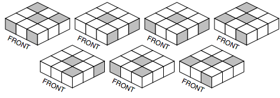

| Author: | David Goodger |
|---|---|
| Contact: | goodger@python.org |
Contents
Summarized from the solution pages mirrored at <http://jjorg.chem.unc.edu/personal/monroe/cube/Denny3x3/> and <http://www.helmsoft.org/cube/rubikscube/>, written by Denny Dedmore. The initial instructions (for completing the first/top layer) and move icon legend have been omitted for brevity.
Find a middle-layer edge piece in the bottom row. Rotate it under the matching side center color.
To move it up & right:
,
To move it up & left:
,
If an edge piece is already in place but backwards, simply apply the above sequences twice. Put a bogus piece from the bottom row in its place, moving the problem piece to the bottom.
Flip the Rubik’s Cube upside down; the former, unfinished bottom side becomes the top. Choose a side color, which becomes the front.
Find the two corners on the top layer with the front side’s color (regardless of orientation). They’ll either be adjacent or diagonally opposite.
Rotate the top layer so the corners matching the front color are in front. If they need to be swapped:
, ,
Rotate the top until the top left corner is in the correct position and then perform the following procedure to move the other corner into the top right position:
, ,
If the remaining corners need to be swapped, turn the cube around 180 degrees and perform the following procedure:
, ,
Spin the entire cube (keeping the top up) until the top center colors match one of the 7 patterns below (ignore other colors).
Orient the cube as shown above and perform this sequence:
, ,
If the corners are not quite finished, match up the new pattern and perform the sequence once again. This process may have to be performed up to three times.
Usually at least one of the 4 remaining edges will be in place. Find that piece and rotate the cube until it is positioned in the front. If no edge is in place, choose any side to be the front. Perform the sequence below once then start over.
Perform the moves below to put all 4 pieces in their correct locations:
,
This step may have to be performed twice to get all edges in place.
Orient the flipped edges so one is in the front and one is to the right. Then perform this sequence:
, , , , ,